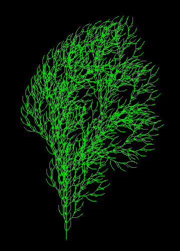

A fully typed, robust, and elegant Lisp/Scheme interpreter written in modern Python 3. This project is a deeply evolutionized version of Peter Norvig's classic lis.py, incorporating modern Python features and powerful Clojure-inspired constructs.
The roots of this project date back to a spark of inspiration from a 1981 Finnish computer magazine (Prosessori), leading to a Python 2 adaptation on the DaniWeb forums in 2011, and finally culminating in this modern, pattern-matching Python 3 masterpiece.
match-case syntax for clean, compiler-like abstract syntax tree (AST) evaluation.() for code and execution blocks.[] for ordered data Vectors (Python tuples).{} for associative Maps/Dictionaries (Python dicts).: evaluate to themselves. If a keyword is called as a function (e.g., (:name user)), it performs a direct dictionary lookup.dataclasses.(save "filename") and (load "filename"), which serialize/deserialize user functions and variables as valid, human-readable Lisp source code.Run the interpreter directly using Python 3:
python lispy3.py
Modern Python 3 Lispy Interpreter Started.
Features: Unclosed brackets are fixed, Clojure map/vector types supported.
Workspace functions: (save "name") and (load "name") are active.
lispy3> (define user {:name "Tony" :status "Trusty"})
lispy3> (:name user)
"Tony"
lispy3> (define square (lambda [x] (* x x)))
lispy3> (square 9)
81
lispy3> (save "my_workspace")
Workspace saved to my_workspace.lisp
python lispy3.py start the REPL
python lispy3.py prog.lisp run prog.lisp from top to bottom, then exit
python lispy3.py -i prog.lisp run prog.lisp, then stay in the REPL
(-i may also come after the file name.)
A program file is ordinary Lisp code that runs from top to bottom, like a Python script. A ; starts a
comment. (load "other") runs another file first; the .lisp ending is optional. If the program drew
with turtle graphics, the window stays open until you close it (not when you use -i, where you get the
prompt instead).
| Form | What it does |
|---|---|
(while test body...) |
repeat the body while the test is true |
(make-vector n fill) |
a vector of n items, all fill (0 if left out); items are numbered from 0 |
(vector-ref v i) |
item i of vector v |
(vector-set! v i x) |
put x into item i of v |
(clock) |
seconds as a decimal number, for timing |
(display a b ...) |
print the values one after another, with nothing between them |
Good to know: + - * / take exactly two arguments, so write (+ (+ a b) c); (if test then else)
always needs the else part; a lambda body is one expression, so wrap several in (begin ...).
sieve_lispy3.lisp is the Byte magazine prime sieve written this way: python lispy3.py sieve_lispy3.lisp.

python lispy3.py tree.lisp: axiom F, rule FF-[-F+F+F]+[+F-F-F], 4 generations, 23 degrees.
An L-system draws a picture from a short string (the axiom) and a rewriting rule. Every generation
replaces each F in the string by the rule. Once the generations are used up, the string is read as
turtle commands:
| Symbol | Meaning |
|---|---|
F |
draw a line forward, step pixels long |
+ |
turn left by angle degrees |
- |
turn right by angle degrees |
[ |
remember the position and direction (a branch starts here) |
] |
go back to the remembered position and direction, without drawing |
Any other character is ignored. Only F is rewritten.
A small example, with axiom F and rule F[+F]F:
generation 0: F
generation 1: F[+F]F
generation 2: F[+F]F[+F[+F]F]F[+F]F
Read generation 1 as: a line, then a side branch turned left, back to where the branch began, then another line on the main stem.
snowflake.lisp ─┐ lsystems.lisp (the engine)
tree.lisp ──────┼─ (load "lsystems") ─▶ draw-node, draw-sys, lsystem-from, lsystem
plant.lisp ─────┘
each example file = settings + one call
settings: axiom, rule, angle, start position, generations, step
call: (tree generations step) ─▶ (lsystem-from ...) ─▶ turtle window
lsystems.lisp knows how to draw any L-system and is loaded by every example. An example file only holds
the settings of one picture and a small function to draw it. Try python lispy3.py tree.lisp,
python lispy3.py plant.lisp and python lispy3.py snowflake.lisp.
To change a picture, edit the numbers under ---- Settings ---- and run the file again, or keep the
prompt open and redraw with different values:
python lispy3.py -i tree.lisp
lispy3> (tree 3 12)
The two numbers are generations and step (line length in pixels). If you close the turtle window, the
next drawing command prints an error once; type (reinit-turtle) or just try again.
Copy tree.lisp, change the settings, and run it. Or draw one straight from the prompt:
lispy3> (load "lsystems")
lispy3> (lsystem-from "F" "F[+F]F[-F]F" 4 3 23.5 0 -250 90)
The arguments are axiom rule generations step angle x y heading. x and y are where the drawing
starts, and heading is the starting direction in degrees (0 is right, 90 is up). (lsystem axiom rule
generations step angle x y) is the same with heading 0.
The number of lines is (Fs in the axiom) × (Fs in the rule) to the power of generations. The tree
rule has 8 Fs, so each extra generation makes eight times as many lines and takes about that much
longer to draw.
The tree and the plant come from The Algorithmic Beauty of Plants (page 25), as shown on https://people.ece.cornell.edu/land/OldStudentProjects/cs490-94to95/hwchen/.